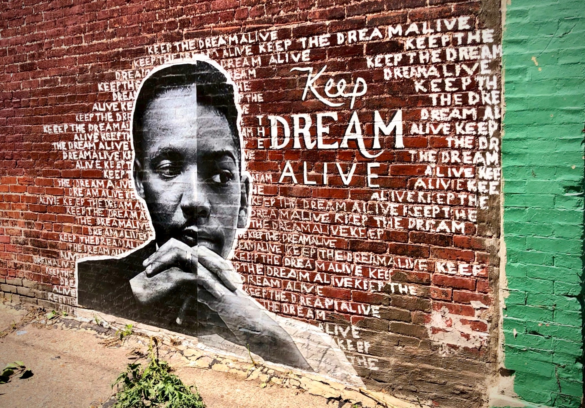

Evidence that keeps pace with displacement.
The Eviction Research Network builds timely, tenant-centered data on housing precarity — for researchers, agencies, and policymakers who can't afford to wait.
The gap between the evidence tenants need and what the system produces.
§ 01 · what is
Public eviction data is lagged, fragmented, andlandlord-centered.
Filings arrive in the public record months after the fact. Court data is siloed by jurisdiction. Tenants exit the record the moment they vacate. ACS aggregates hide the precarity that forms below the tract level.
Policymakers responsible for housing stability are asked to act with a rearview mirror, at a resolution too coarse to matter.

Plate i · documentary evidence
A door, a number, and a notice.
Apartment 410. King County, Washington. The clinical typography of state authority taped to a domestic door. Every filing in the network's database resolves at a door like this one.
photograph · Tim Thomas · 2017
§ 02 · what could be
Timely, parcel-scale, tenant-centered eviction evidence — peer-reviewed and policy-ready.
HPRM surfaces displacement risk before the filing; ERN state pipelines keep the public record current.
We integrate court, administrative, and tenant-voice data into models and briefings built for the decisions housing policy has to make. Methods of record. Code on GitHub. Citations with DOIs.
“They were the only people who could tell us what was happening to renters before the filings caught up.State Legislator · Policy partner
Three pillars of the ERN research program.
§ 03 · program
Rigorous research in service of housing stability.
Three operational pillars. Each is versioned, citable, and stewarded year over year — not delivered as one-off reports.
Eviction data infrastructure
Thirty-seven state pipelines. Court records, landlord registries, and tenant-voice data — harmonized and maintained.
Precarity modeling
HPRM predicts displacement risk at the parcel level. Peer-reviewed, open, equity-aware. Stewarded with UDP.
Policy translation
Testimony, briefings, and academic publications that move evidence into the hands of decision-makers.

§ 04 · finding
Black renters face 1.8× the eviction hazard of white renters.
Cox proportional-hazards specification, adjusted for household income and neighborhood composition. The disparity has been broadly stable since 2017 and persists post-moratorium.
cidr lab · ern · 2026
§ 05 · at scale
What the system produces, monthly.
Every month the eviction system produces filings at roughly the same scale, harmonized across the case-level court records the network maintains.

§ 06 · network
Twenty-seven partner organizations.
ERN's flagship methods are co-authored across at least three institutions. Affiliation is operational, not symbolic. The network is the infrastructure.
§ 07 · what to remember
Three things to take with you.
§ 08 · the ask
Four-year anchor funding to scale HPRM to national coverage and sustain state pipelines.
Deliverables — production model in 10 priority states, four peer-reviewed papers, six policy briefings, public methodology documentation, and a graduate-student training pipeline through UC Berkeley Sociology.
§ 09 · let's talk